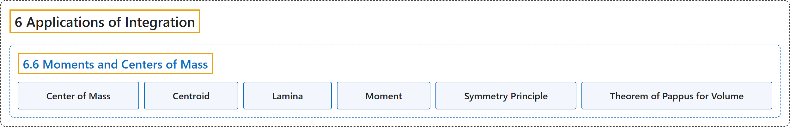

6.6 Moments and Centers of Mass
Classification

Glossary
| Term | Definition | 中文翻译 | Source |
|---|---|---|---|
| 6 Applications of Integration 积分的应用 |
(No definition) | （无定义） | Strang & Herman, 2016a, chapter 6 |
| 6.6 Moments and Centers of Mass 矩与质心 |
(No definition) | （无定义） | Strang & Herman, 2016a, section 6.6 |
| Center of Mass 质心 |
"the point at which the total mass of the system could be concentrated without changing the moment" | 系统的总质量可以集中于此而不改变力矩的点 | Strang & Herman, 2016a, chapter 6 Key Terms |
| Centroid 形心 |
"the centroid of a region is the geometric center of the region; laminas are often represented by regions in the plane; if the lamina has a constant density, the center of mass of the lamina depends only on the shape of the corresponding planar region; in this case, the center of mass of the lamina corresponds to the centroid of the representative region" | 区域的形心是区域的几何中心；薄片常用平面上的区域表示；若薄片密度恒定，薄片的质心只取决于对应平面区域的形状；此时薄片的质心与代表区域的形心重合 | Strang & Herman, 2016a, chapter 6 Key Terms |
| Lamina 薄片 |
"a thin sheet of material; laminas are thin enough that, for mathematical purposes, they can be treated as if they are two-dimensional" | 一层很薄的材料；薄片薄到在数学上可以当作二维对象处理 | Strang & Herman, 2016a, chapter 6 Key Terms |
| Moment 矩 |
"if n masses are arranged on a number line, the moment of the system with respect to the origin is given by \(M=\sum_{i=1}^{n}m_{i}x_{i};\) if, instead, we consider a region in the plane, bounded above by a function \(f(x)\) over an interval \([a,b],\) then the moments of the region with respect to the x- and y-axes are given by \(M_{x}=\rho {\int }_{a}^{b}\frac{{[f(x)]}^{2}}{2}dx\) and \(M_{y}=\rho {\int }_{a}^{b}xf(x)dx,\) respectively" | 若 n 个质量排在数轴上，系统关于原点的矩为 \(M=\sum_{i=1}^{n}m_{i}x_{i};\) 若改为考虑平面上的区域，上方由区间 \([a,b],\) 上的函数 \(f(x)\) 围成，则区域关于 x 轴和 y 轴的矩分别为 \(M_{x}=\rho {\int }_{a}^{b}\frac{{[f(x)]}^{2}}{2}dx\) 和 \(M_{y}=\rho {\int }_{a}^{b}xf(x)dx,\) | Strang & Herman, 2016a, chapter 6 Key Terms |
| Symmetry Principle 对称原理 |
"the symmetry principle states that if a region R is symmetric about a line l, then the centroid of R lies on l" | 对称原理指出，若区域 R 关于直线 l 对称，则 R 的形心在 l 上 | Strang & Herman, 2016a, chapter 6 Key Terms |
| Theorem of Pappus for Volume 帕普斯体积定理 |
"this theorem states that the volume of a solid of revolution formed by revolving a region around an external axis is equal to the area of the region multiplied by the distance traveled by the centroid of the region" | 这条定理指出，区域绕外部轴旋转所成旋转体的体积，等于区域面积乘以区域形心经过的距离 | Strang & Herman, 2016a, chapter 6 Key Terms |
References
Strang, G., & Herman, E. (2016a). Calculus volume 1. OpenStax. Retrieved October 29, 2026, from https://openstax.org/details/books/calculus-volume-1